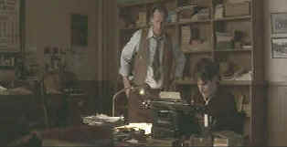

| Snow Falling on Cedars (SE) /C,B+ |
| Universal/1999/128/ANA2.35 |
Scott Hicks' debut, award winning feature, Shine, was layered and complex, but the central figure of David Helfgott dominated every segment of the film, unifying it's force. Snow Falling on Cedars shifts time with a questionable aggressiveness. It's almost as if Hicks has determined the story won't yield enough power on its own, and works the material ad nauseam, looking for an artistic magic wand that will turn the mundane into the glorious. There are three major elements to Snow Falling on Cedars. An inter-racial romance between Ishmael Chambers and Hatsue Miyamoto shifts back and forth in time, layering Ishmael's bitter present with bucolic images of childhood romance. There's the World War II Japanese internment story that unfolds as part of the romance. And the main element around which everything is framed is a stilted murder trial.
 |
|
Ishmael prepares his father's editorial. |
The
characters fail to emerge with any interest through the moody
photography and snow filled nights. Ishmael, the forlorn lover
is played by Ethan Hawke in an almost somnambulant stupor, is a
the small town newspaper editor covering the murder trial. Youki
Kudoh plays Hatsue, the object of Ishmael's affection and the
wife of the accused with appropriate delicacy. Sam Shepherd has
a few nice moments as Ishmael's father and Max Van Sydow has
plenty of imposing screen time as the defense attorney.
Hicks combines with cinematographer
Robert Richardson for some beautiful images. Snow blankets the
frozen North exteriors with blue light bathing the whiteness
with a glow. These could have been captured as paintings with
more power than as part of the static film.
The DVD transfer of Snow Falling on Cedars
is faithful to the original material, but much of that is dark,
arty, and moody, and while it looks good on DVD, it lacks some theatrical
punch. Images are sharp, with reasonable shadow illumination.
Grain is delivered with perfect precision. The muted color
scheme is accurate. The Dolby Digital 5:1 Surround is presented
with exquisite ambient sense. Elements actually meld with the
theater viewing area.
Listening to
Scott Hicks' audio commentary, it appears he was much more
concerned with production design and photographic effects
reflecting the inner turmoil of the characters than clarity of
story structure. There is no question that Hicks has passion for
this material. I think his artistic flourishes blinded his
vision as a filmmaker in Snow Falling on Cedars. Hicks
provides a consistently intelligent commentary. You'll
understand his every intent on listening to the commentary.
Hicks speaks clearly, though it's almost as if he is whispering
in reverence to the material. In addition to the Hicks
commentary, there are a number of deleted or extended scenes.
They are all shot well, but they don't illuminate the material
any better.

Selections from
the feature archive include articles on Akira
Kurosawa, Frank
Darabont, Blonde
Bimbos, Hollywood
Street Gangs,
or Vietnam:
The Hollywood Pariah,
and many more....

During World War II, Hollywood pumped out war movies one after the other. Vietnam was was another story. As far as Hollywood was concerned it was a pariah.

The Movie Poster Archive include extensive poster images from the films of stars like Susan Hayward, Kirk Douglas, Katharine Hepburn and many more. This month's featured star is William Holden.
 Direct
from the corridors of the Home
Theater Forum, Home Theater Talk is
the newest place on the Net to
discuss everything home theater.
Friendly atmosphere and
knowledgeable folks are the secret
ingredients.
Direct
from the corridors of the Home
Theater Forum, Home Theater Talk is
the newest place on the Net to
discuss everything home theater.
Friendly atmosphere and
knowledgeable folks are the secret
ingredients.

You won’t want to miss the
online iF Magazine. You may have guessed iF stands for
independent film.

The Cinema Laser
A home grown magazine for laserphiles that has been publishing for a number of years and has embraced DVD in a big way. Lots of helpful information.